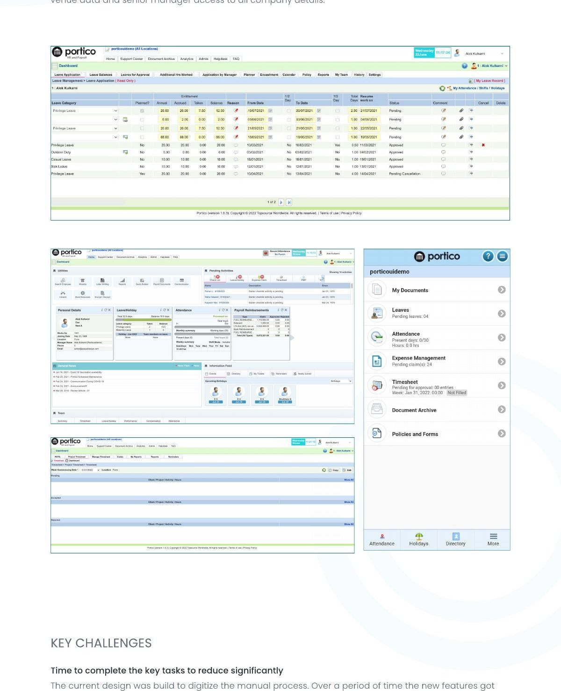
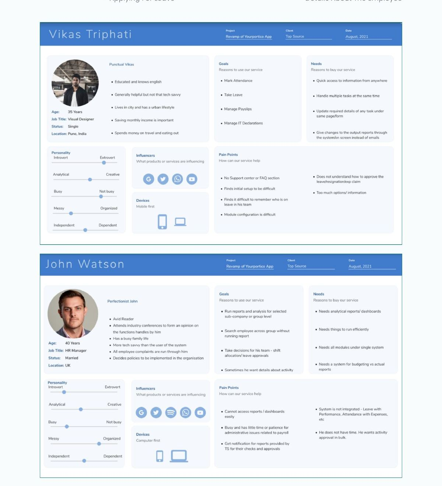
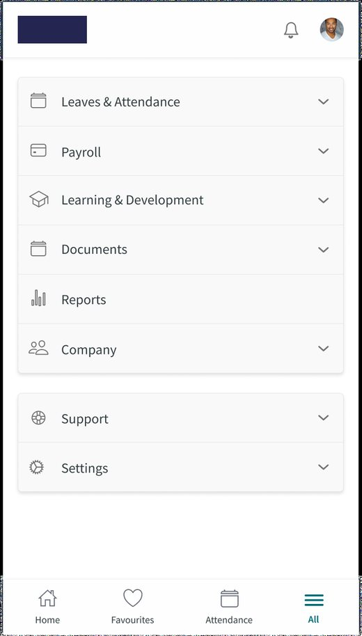
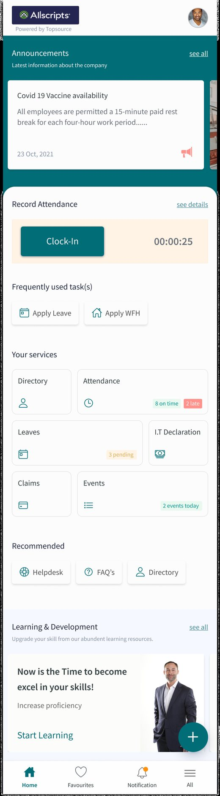
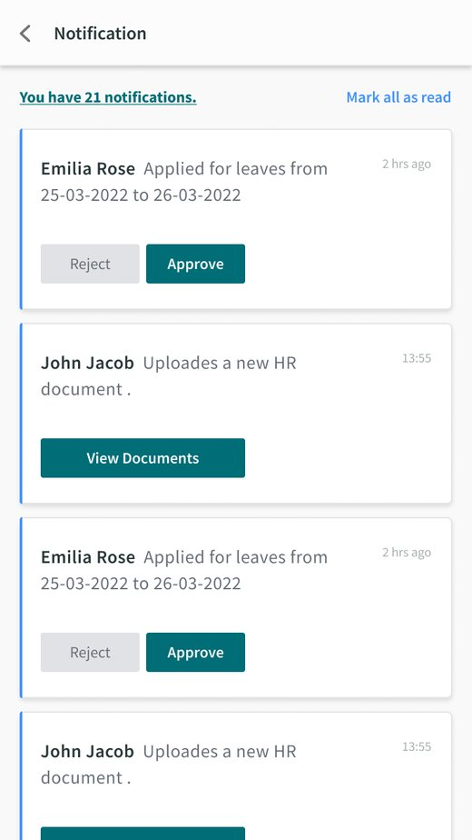
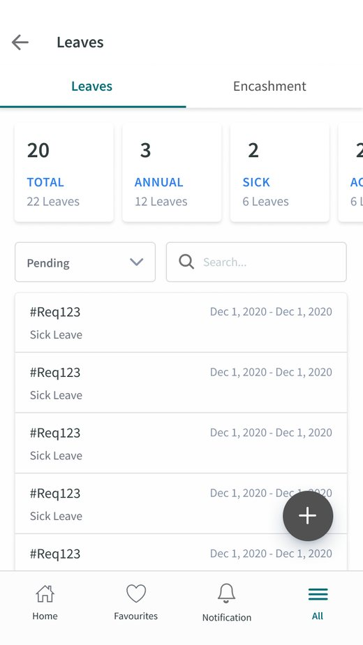
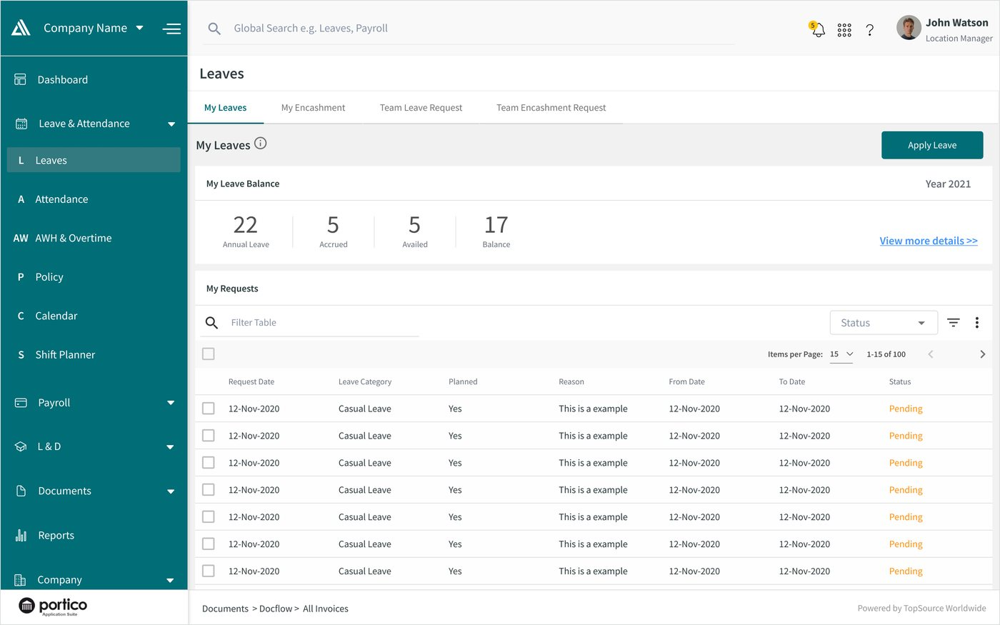
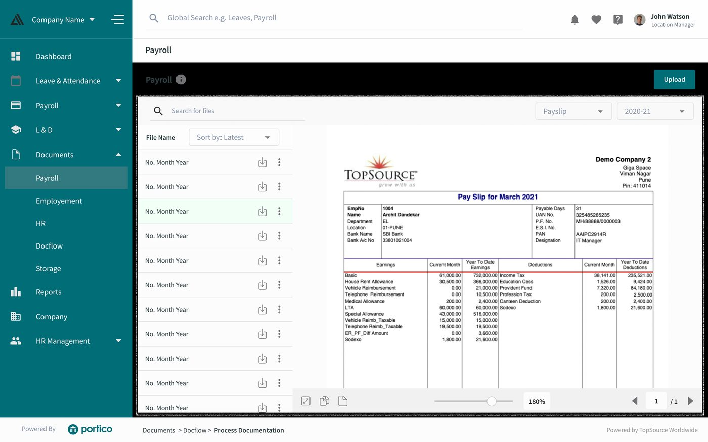
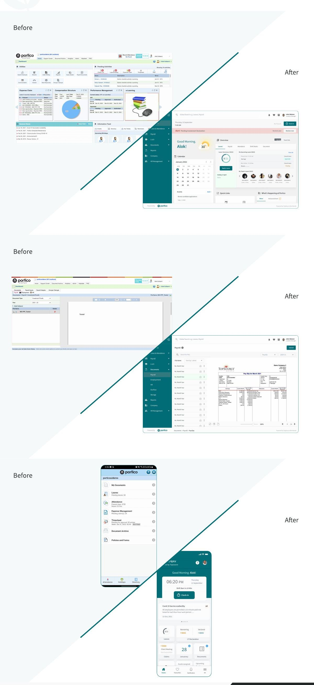

The short version
Portico is an HR and payroll suite that began as a way to digitise manual HR processes: document archive, payroll, expenses, recruitment, eLearning and payments. It worked, but the HRMS had been built organically, feature by feature, as needs came up. So each module looked and behaved differently, and common tasks sat several levels deep.
Employees, managers, HR and admins used the same screens for very different jobs, and the mobile app tried to copy the web. Portico’s management wanted a mobile-first redesign, delivered in two phases, that would cut support queries in half.
My part: I led a team of four designers from research to final web and mobile designs. I worked with Portico’s product owner and developers on scope and feasibility, and with end users for testing. I ran the stakeholder alignment workshop remotely on Mural during Covid-19 to agree goals, user segments and success measures, and led an expert review of the existing app, mapping its flows to count the steps in each task. I also restructured the information architecture through card sorting and owned the design system for web and mobile.
What made it hard
- The menu followed the order features were built. Flow mapping showed common tasks buried several levels deep, with no search and no in-app guidance.
- Every screen looked different. The expert review found inconsistent layouts, icons and button weights, low contrast and a loader on every action.
- Four roles shared one set of screens. Each role does a few things every day. Employees clock in, apply for leave and download payslips. Managers approve requests and check their team. HR and admins manage people, documents and company data.
- The mobile app tried to copy the web, instead of being built around what people need on the move.
How my thinking changed along the way
Rebuild the navigation around categories people recognise
The old structure matched how the product was built, not how people think about their work. So we ran card sorting and ended up with clear top-level categories: Leaves & Attendance, Payroll, Learning & Development, Documents, Reports and Company. We added global search on the web, which covers everything, for example “Leaves, Payroll”, and brought frequent tasks to the front. The trade-off was significant rework for the development team, which later limited how much of the redesign shipped.
One design system, one main action per screen
The expert review found inconsistent layouts, icons and button weights, low contrast and a loader on every action. So we moved every module onto one design system for web and mobile, with one clear primary action per screen.
A home for each role, which users can change
I weighed one shared dashboard, a fixed home per role, and role-based defaults that users can change. A shared dashboard would be cluttered for everyone, and a fixed one would fail people whose work doesn’t match their title. So employees, managers, HR and admins each get a default built from their daily activities, and anyone can pin their own shortcuts to Favourites. The cost is four home layouts to design, test and maintain instead of one.
Mobile does the quick tasks, not everything the web does
I could have ported the full web product or designed mobile as its own product. I chose the second: clock in, apply for leave or work from home, approve requests, view payslips and sign documents. Document management, HR management and company administration stay on the web, because they carry too much data for a phone and nobody needs them in a hurry. Some users will have to switch to the web for heavier work.
What we started from
We began with the existing product, then built proto-personas from the stakeholder workshop and regrouped the menu through card sorting.



What employees, managers and HR see






What happened after launch
- 30% fewer steps across core admin tasks after the navigation was regrouped into clear categories.
- Applying for leave: 1 tap from the home screen’s frequently used tasks, against 4 through the full menu (All → Leaves & Attendance → Leaves → +).
- Approving a request: 1 tap from the notification, with no need to open the request.
- Early user testing showed the new navigation helped people find information and complete tasks.
What didn’t go to plan
Some of the best improvements didn’t ship. Near the end of our engagement, Portico’s product owner left the company, and the decision on what to build passed to the developers. Facing a deadline, they chose to skip changes that meant rework.
I agreed a smaller scope that met their deadline, and handed over a prioritised backlog of the remaining UX improvements for them to pick up after launch. Post-launch figures, such as support queries, were not shared with us after the engagement ended, so I can’t say whether the support target was met.
What I’d do next
I should have pushed harder for users earlier. Next time I would set up the phased plan at the start, so improvements are scheduled from the beginning, not traded away at the end.